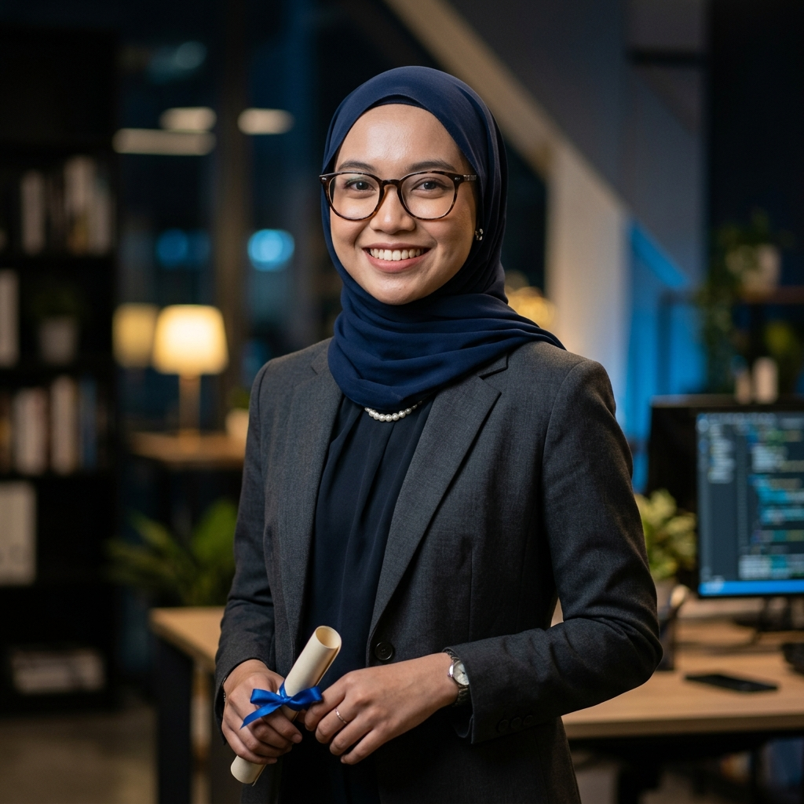

IT Graduate | QA Engineer | Data Science Enthusiast
Highly motivated Information Technology graduate with expertise in Quality Assurance, software testing, and data analysis. Passionate about delivering high-quality software solutions and making meaningful impact.

BSc IT (Hons)
UMK · Data Science
Entomo Digital Sdn Bhd
Feb 2026 – Jul 2026
Tadika Permata Nur Ain
Aug – Sep 2024
Sra Abd Rahman Bin Auf
Jun–Sep 2022 | Jul–Oct 2023
Developed basic test scripts for browser automation, gaining hands-on practical experience in software quality assurance during internship.
Served as COO — identified and gathered data to support app development for buying, selling & discovering eco-friendly products.
Built an IoT-powered automatic fish feeding system to promote sustainable aquaculture and support SDG 2 — Zero Hunger.
Analysed district-level income, poverty & population data in Malaysia to identify development disparities for government resource planning.
Malay
Fluent
English
Basic
Mandarin
Basic
Arabic
Basic
Universiti Malaysia Kelantan (UMK)
Maktab Mahmud Pokok Sena, Kedah
Open to internships, junior roles, and collaborative projects.